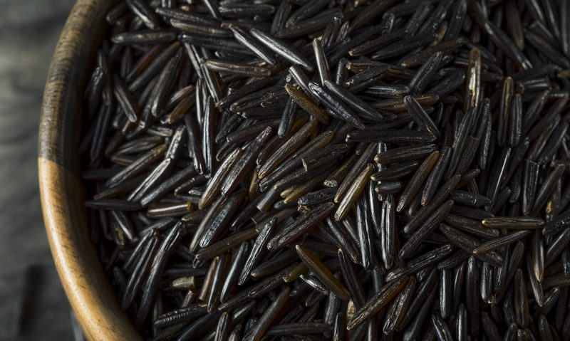
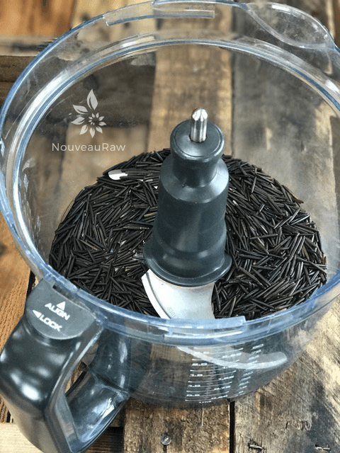
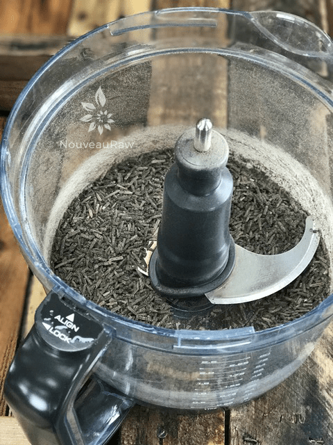
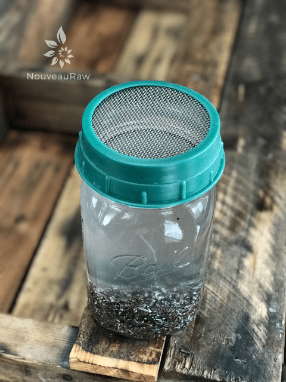
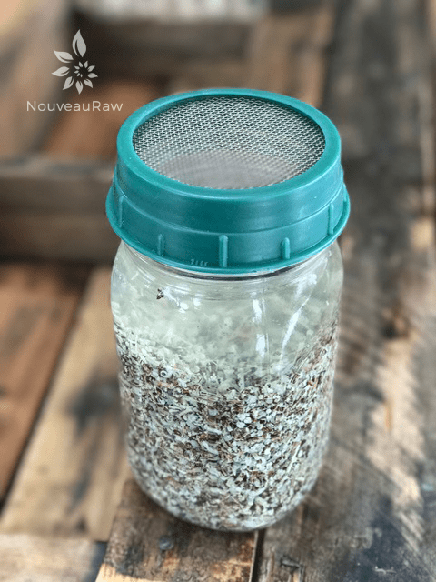
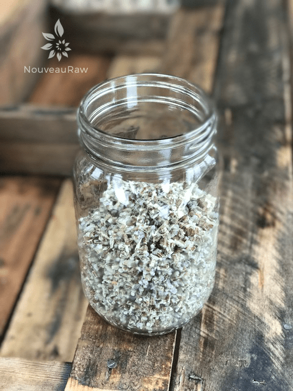
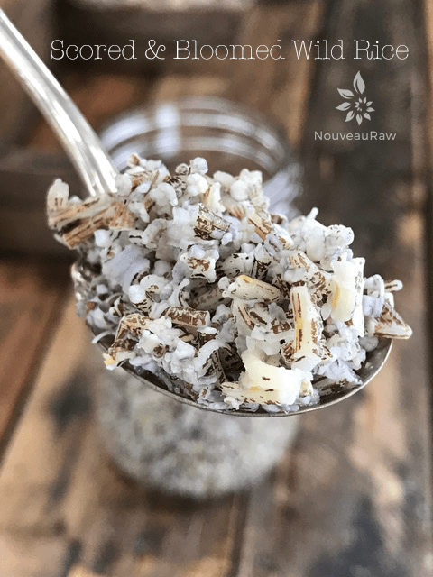

Wild Rice | Blooming
Wild Rice is a not a raw ingredient. But it comes with many health benefits. Wild rice is high in potassium and phosphorus; it compares favorably to the nutritional content of wheat, corn, and oats. It is gluten-free, high in fiber, high in protein, folate, B vitamins (niacin, riboflavin, and thiamin), calcium, iron, and vitamin E. Wild rice is the seed of aquatic grass and considered a pseudo-grain, similar to quinoa.

What does Blooming mean?
What do I mean by blooming? Great question. What I mean is that the rice kernels open up like a beautiful flower, which makes them more palatable. If you have a compromised digestive system, I recommend cooking the rice, breaking it down even further.
Bloomed rice is fluffy and chewy. It may be used in a salad or for a pilaf. Mix or match it with your choice of fruits and nuts, or take it in a savory direction by adding grated or chopped vegetables, seeds and your choice of dressing.
Scoring the Rice
I am going to share a new technique that I have added when it comes to blooming rice, and that is called scoring rice. You place the rice in the food processor and run it for 1-2 minutes. You will read more about down below in the preparations. But this process basically cuts the rice into smaller pieces so it can absorb more water and bloom more efficiently.
Wild Rice isn’t Raw
From the research that I have done, wild rice is not considered a “raw” product due to the processing stage that takes place. Below I have pulled together from various companies, the heating procedure that takes place after they harvest it. For more details, I included their web links so you can delve deeper into it.
 Living Tree Community Foods:
Living Tree Community Foods:
“…Real Wild Rice is parched by Ojibwa Native Americans. They take the wet, green rice and put it into a stainless steel drum that they turn over an open fire. It is heated to 280 degrees Fahrenheit for one to two hours.” (source)
Northern Wilds Rice Company:
“…Most commercial rice processors parch rice in big tumblers heated by gas or LPG. Cathy Chaver hand-parches the rice over an open fire.”
“…Parching destroys the rice germ, which prevents the seed from sprouting, allowing the rice to be stored for long periods. Parching also hardens the kernel and loosens the hull (to be broken off and discarded in the hulling part of the process).”
“….Parching over a wood fire imparts a unique, slightly smoky taste to the already nutty flavor of wild rice.”
Wilderness Family Naturals Rice:
“…Once the rice is harvested, it looks just like large green grass seed. These seeds are then parched to remove the husk. We currently offer two types of wild rice. There are several different types of parching, and there is some natural variation in the size of the grains:
The first type of wild rice uses a method that gives you a nice, even dark grained “rice.” It has been parched with modern equipment giving a high-quality grain. The largest of the wild rice kernels we call “Canadian Jumbo” because it only grows in Canada, and we consider it the “cream of the crop.” It is the largest and the plumpest of all wild rice in North America. It takes approximately 70-80 minutes to cook. The second type of wild rice we offer is a “Hand Parched” wild rice, which has been parched by Ojibwe Indians in a wood-fired parcher using their traditional methods. This wild rice results in a lighter colored wild rice than the Canadian Jumbo above. This rice also cooks much faster (15-20 minutes).” (source)
Indian Country:
“…After the rice was cleaned of extraneous material-twigs, pieces of stalks, small stones, and worms-it was spread out on sheets of birch bark, blankets, or canvas to dry in the sun. When it was dry enough, the women put several pounds of rice in a big iron kettle or galvanized iron washtub and parched it over an open fire. To keep it from scorching, they stirred it constantly with a wooden paddle. This parching process cured the rice and also helped loosen the outer husks.” (source)
Pinewood Forge:
“…This is the second key to getting high-quality rice. There are very few people left who do the wood-fire hand processing. We take it to an older White Earth Ojibway fellow called Sunfish. His skill and care are beautiful to watch – constantly monitoring the wood fire, sniffing and feeling the rice as it parches. (Parching is the slow heating of the green rice until it is separated from the husk and thoroughly dried.)”
So, if wild rice isn’t raw, why bloom it and eat it raw? Why not either omit it if 100% raw or cook it? Once again, great questions. Personally, I can’t find much information to back up that fact that “raw” bloomed rice has any extra health benefits. I looked for the science of it, not just speculations. If you find some, please share the links below in the comment section.
Personally, if I am going to eat rice, I am going to cook it, BUT I do bloom/soak it before speed up the cooking time and to make it easier on digestion. Another key ingredient to help this process is kombu seaweed. It is known for reducing blood cholesterol and hypertension. It is high in iodine, which is essential for thyroid functioning; iron, which helps carry oxygen to the cells; calcium, which builds bones and teeth; as well as vitamins A and C, which support eyes and immunity, respectively. It has a very mild flavor and isn’t to “fishy” tasting.
Blooming the wild rice: Dehydrator Method (<24 hrs)
Yield Measurements: 1 cup = 2 1/2 – 3 1/2 cups bloomed
Scoring the Rice:
- Place the rice in a food processor fitted with the “S” blade. Process for 1-2 minutes.
- Caution – this is nosey, so please protect your ears.
- Stop at 1 minute and remove the lid. The rice will start to get cuts into it, and powder will begin to form. If you don’t see this powder, keep processing.
- Once it is done, rinse the rice until the water runs clear.
Soaking:
- Place 1 cup of wild rice in a quart jar and fill the jar with water.
- The rice will expand, and you want it to remain covered in water.
- If necessary, remove all of the trays in the dehydrator to make enough space, and dehydrate the wild rice at 115 degrees (F) for 24 hours or until bloomed.
- The rice kernels will have opened and softened to a fluffy texture.
- After dehydration use a colander to drain and rinse the wild rice thoroughly.
- Gently squeeze any excess water from the wild rice, using a towel to absorb as much moisture as possible.
- The wild rice should display a nice dry, fluffy texture.
- If you are unsure whether the rice is ready, open up the jar and look for unbloomed kernels. Taste one to see if it is still hard. If it is, you need to continue the soaking process in the dehydrator a little longer.
- If you are not ready to use your rice in a recipe, return the bloomed rice to a glass jar and add enough water to cover. Store in the fridge for up to 2 weeks.
Blooming the wild rice: Without a Dehydrator (1-2 days)
Scoring the Rice:
- Place the rice in a food processor fitted with the “S” blade. Process for 1-2 minutes.
- Caution – this is nosey, so please protect your ears.
- Stop at 1 minute and remove the lid. The rice will start to get cuts into it, and powder will begin to form. If you don’t see this powder, keep processing.
- Once it is done, rinse the rice until the water runs clear.
Soaking:
- Place 1 cup of wild rice in a quart jar and fill the jar with water.
- The rice will expand, and you want it to remain covered in water.
- Soak for 1 day, changing the water twice daily.
- Once it’s bloomed, rinse it, change the water again and store it in the refrigerator in water. You can change the water every two or three days once it’s in the refrigerator, and you can leave it in there for a couple of weeks. So you can always have wild rice if you want it at a moment’s notice.
The wild rice photos above are a mix; the one below is straight wild rice, which I recommend over the other.
-

-
Place the wild rice in the food processor.
-

-
Process for 60-90 seconds until you see a powder.
-

-
Rinse and add to a quart jar. Let it sit overnight on the counter.
-

-
Rinse 1-2 times during the soaking process.
-

-
As you can see it swelled up quite a bit.
-

-
This is what the end product looks like.
© AmieSue.com